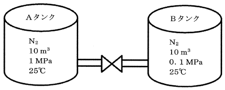

平成29年度 問35 化学プロセス
バルブを介して遮断されている2基の密閉したタンクがある。Aに示した10 m3のタンクには1 MPaの窒素ガスが充填されており、Bタンクの容量も10 m3であり、0.1 MPaの窒素ガスが充填されている。温度はともに25℃である。遮断しているバルブを時間をかけて開け、2基のタンク内の圧力が均一で平衡となったときのBタンクの温度に最も近い値はどれか。
ただし、窒素ガスは理想気体とし、外部からの入熱は無視する。また、定圧比熱Cp、定容比熱Cvとして、Cp/Cv=1.4とする。

理想気体の内部エネルギーは温度にのみ依存し、U=nCvTで表されます。n はモル数、Cvは定容比熱、Tは温度です。
それぞれの内部エネルギーはUA＝nACvTA、UB＝nBCvTBです。また混合後の全内部エネルギーはUtotal＝(nA＋nB)CvTfinalです。
断熱過程で外部との熱の出入りがないので、エネルギー保存則からUtotal＝UA＋UBとなります。
よって代入すると、(nA＋nB)CvTfinal＝nACvTA＋nBCvTBです。両タンクの温度は同じであることからT＝TA＝TBとして計算します。
(nA＋nB)CvTfinal＝nACvTA＋nBCvTB
(nA＋nB)CvTfinal＝nACvT＋nBCvT
(nA＋nB)Tfinal＝nAT＋nBT
(nA＋nB)Tfinal＝(nA＋nB)T
Tfinal＝T
よって、バルブを開けた後の温度はTfinal＝T＝25℃です。
問題に定圧比熱Cp、定容比熱Cvとありますが、液体の場合は体積変化が少ないためCp/Cv≒1.0です。気体の場合、定圧比熱Cpにおいては温度上昇のみならず膨張による外部への仕事の分だけ定容比熱Cvよりも大きくなります。